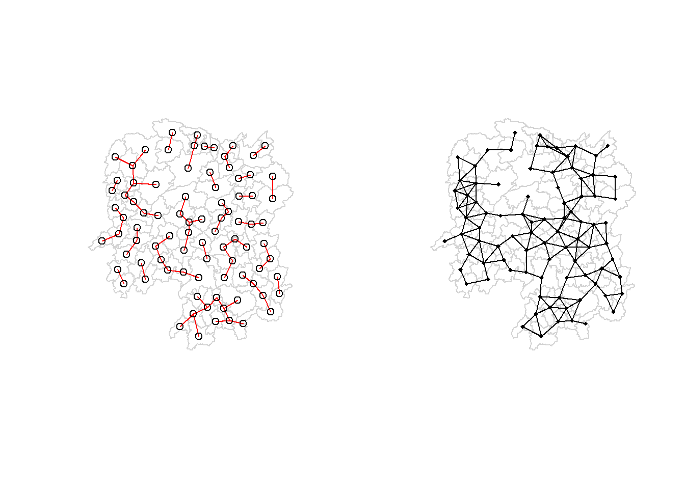

pacman::p_load(tidyverse,sf,spdep,tmap)In-class Exercise 1
Overview
This exercise covers Chapter 3 on Spatial Weights and their applications using R.
Data Set
Two datasets will be used in this exercise:
- Hunan County Boundary Layer: A geospatial set in ESRI shapefile format.
- Hunan_2012.csv: This file contains selected Hunan’s local development indicators in 2012.
Getting Started
The code chunk below will install and load tidyverse and sf packages.
Importing Geospatial Data
Importing polygon features
This code chunks will import ESRI shapefile into R.
hunan<-st_read(dsn="data/geospatial",layer="Hunan")Reading layer `Hunan' from data source
`C:\thaorocket\ISS624\In-class_Ex1\data\geospatial' using driver `ESRI Shapefile'
Simple feature collection with 88 features and 7 fields
Geometry type: POLYGON
Dimension: XY
Bounding box: xmin: 108.7831 ymin: 24.6342 xmax: 114.2544 ymax: 30.12812
Geodetic CRS: WGS 84Importing attribute data in csv to R environment
hunan2012<-read_csv("data/aspatial/Hunan_2012.csv")Rows: 88 Columns: 29
── Column specification ────────────────────────────────────────────────────────
Delimiter: ","
chr (2): County, City
dbl (27): avg_wage, deposite, FAI, Gov_Rev, Gov_Exp, GDP, GDPPC, GIO, Loan, ...
ℹ Use `spec()` to retrieve the full column specification for this data.
ℹ Specify the column types or set `show_col_types = FALSE` to quiet this message.Performing relational join
Next we will join the attribute data of hunan’s Spatial Polygon Data Frame with the attribute data of hunan2012’s dataframe by performing the below code chunk.
hunan<-left_join(hunan,hunan2012)Joining, by = "County"hunanSimple feature collection with 88 features and 35 fields
Geometry type: POLYGON
Dimension: XY
Bounding box: xmin: 108.7831 ymin: 24.6342 xmax: 114.2544 ymax: 30.12812
Geodetic CRS: WGS 84
First 10 features:
NAME_2 ID_3 NAME_3 ENGTYPE_3 Shape_Leng Shape_Area County
1 Changde 21098 Anxiang County 1.869074 0.10056190 Anxiang
2 Changde 21100 Hanshou County 2.360691 0.19978745 Hanshou
3 Changde 21101 Jinshi County City 1.425620 0.05302413 Jinshi
4 Changde 21102 Li County 3.474325 0.18908121 Li
5 Changde 21103 Linli County 2.289506 0.11450357 Linli
6 Changde 21104 Shimen County 4.171918 0.37194707 Shimen
7 Changsha 21109 Liuyang County City 4.060579 0.46016789 Liuyang
8 Changsha 21110 Ningxiang County 3.323754 0.26614198 Ningxiang
9 Changsha 21111 Wangcheng County 2.292093 0.13049161 Wangcheng
10 Chenzhou 21112 Anren County 2.240739 0.13343936 Anren
City avg_wage deposite FAI Gov_Rev Gov_Exp GDP GDPPC GIO
1 Changde 31935 5517.2 3541.0 243.64 1779.5 12482.0 23667 5108.9
2 Changde 32265 7979.0 8665.0 386.13 2062.4 15788.0 20981 13491.0
3 Changde 28692 4581.7 4777.0 373.31 1148.4 8706.9 34592 10935.0
4 Changde 32541 13487.0 16066.0 709.61 2459.5 20322.0 24473 18402.0
5 Changde 32667 564.1 7781.2 336.86 1538.7 10355.0 25554 8214.0
6 Changde 33261 8334.4 10531.0 548.33 2178.8 16293.0 27137 17795.0
7 Changsha 40446 21415.0 43599.0 2473.10 4605.5 81113.0 63118 99254.0
8 Changsha 40744 18662.0 49234.0 2448.90 4812.2 73250.0 62202 114145.0
9 Changsha 45171 12122.0 48829.0 2285.50 3802.3 37488.0 70666 148976.0
10 Chenzhou 28058 4598.9 6386.1 220.57 1454.7 4941.2 12761 4189.2
Loan NIPCR Bed Emp EmpR EmpRT Pri_Stu Sec_Stu Household
1 2806.9 7693.7 1931 336.39 270.5 205.9 19.584 17.819 148.1
2 4550.0 8269.9 2560 456.78 388.8 246.7 42.097 33.029 240.2
3 2242.0 8169.9 848 122.78 82.1 61.7 8.723 7.592 81.9
4 6748.0 8377.0 2038 513.44 426.8 227.1 38.975 33.938 268.5
5 358.0 8143.1 1440 307.36 272.2 100.8 23.286 18.943 129.1
6 6026.5 6156.0 2502 392.05 329.6 193.8 29.245 26.104 190.6
7 23408.0 15719.0 6225 919.62 721.4 300.1 90.978 58.819 374.8
8 18435.0 13763.0 4351 852.96 757.6 318.3 80.715 68.853 391.7
9 10330.0 16495.0 1678 361.48 268.6 131.2 28.838 24.815 161.3
10 2555.3 3271.8 970 290.82 255.4 99.4 33.171 17.505 104.6
Household_R NOIP Pop_R RSCG Pop_T Agri Service Disp_Inc RORP
1 135.4 53 346.0 3957.9 528.3 4524.410 14100.0 16610 0.6549309
2 208.7 95 553.2 4460.5 804.6 6545.350 17727.0 18925 0.6875466
3 43.7 77 92.4 3683.0 251.8 2562.460 7525.0 19498 0.3669579
4 256.0 96 539.7 7110.2 832.5 7562.340 53160.0 18985 0.6482883
5 157.2 99 246.6 3604.9 409.3 3583.910 7031.0 18604 0.6024921
6 184.7 122 399.2 6490.7 600.5 5266.510 6981.0 19275 0.6647794
7 369.8 733 642.7 16233.0 1285.5 10844.470 26617.8 27345 0.4999611
8 369.6 552 655.5 15623.0 1186.5 12804.480 18447.7 24020 0.5524652
9 154.8 314 266.6 5623.3 533.4 5222.356 6648.6 27690 0.4998125
10 121.9 34 243.2 2386.4 388.7 2357.764 3814.1 16072 0.6256753
ROREmp geometry
1 0.8041262 POLYGON ((112.0625 29.75523...
2 0.8511756 POLYGON ((112.2288 29.11684...
3 0.6686757 POLYGON ((111.8927 29.6013,...
4 0.8312558 POLYGON ((111.3731 29.94649...
5 0.8856065 POLYGON ((111.6324 29.76288...
6 0.8407091 POLYGON ((110.8825 30.11675...
7 0.7844544 POLYGON ((113.9905 28.5682,...
8 0.8882011 POLYGON ((112.7181 28.38299...
9 0.7430563 POLYGON ((112.7914 28.52688...
10 0.8782065 POLYGON ((113.1757 26.82734...Note that R can find out the “by” argument for the left join as County without us needing to explicitly state the argument.
glimpse(hunan)Rows: 88
Columns: 36
$ NAME_2 <chr> "Changde", "Changde", "Changde", "Changde", "Changde", "Ch…
$ ID_3 <int> 21098, 21100, 21101, 21102, 21103, 21104, 21109, 21110, 21…
$ NAME_3 <chr> "Anxiang", "Hanshou", "Jinshi", "Li", "Linli", "Shimen", "…
$ ENGTYPE_3 <chr> "County", "County", "County City", "County", "County", "Co…
$ Shape_Leng <dbl> 1.869074, 2.360691, 1.425620, 3.474325, 2.289506, 4.171918…
$ Shape_Area <dbl> 0.10056190, 0.19978745, 0.05302413, 0.18908121, 0.11450357…
$ County <chr> "Anxiang", "Hanshou", "Jinshi", "Li", "Linli", "Shimen", "…
$ City <chr> "Changde", "Changde", "Changde", "Changde", "Changde", "Ch…
$ avg_wage <dbl> 31935, 32265, 28692, 32541, 32667, 33261, 40446, 40744, 45…
$ deposite <dbl> 5517.2, 7979.0, 4581.7, 13487.0, 564.1, 8334.4, 21415.0, 1…
$ FAI <dbl> 3541.0, 8665.0, 4777.0, 16066.0, 7781.2, 10531.0, 43599.0,…
$ Gov_Rev <dbl> 243.64, 386.13, 373.31, 709.61, 336.86, 548.33, 2473.10, 2…
$ Gov_Exp <dbl> 1779.5, 2062.4, 1148.4, 2459.5, 1538.7, 2178.8, 4605.5, 48…
$ GDP <dbl> 12482.0, 15788.0, 8706.9, 20322.0, 10355.0, 16293.0, 81113…
$ GDPPC <dbl> 23667, 20981, 34592, 24473, 25554, 27137, 63118, 62202, 70…
$ GIO <dbl> 5108.9, 13491.0, 10935.0, 18402.0, 8214.0, 17795.0, 99254.…
$ Loan <dbl> 2806.90, 4550.00, 2242.00, 6748.00, 358.00, 6026.50, 23408…
$ NIPCR <dbl> 7693.7, 8269.9, 8169.9, 8377.0, 8143.1, 6156.0, 15719.0, 1…
$ Bed <dbl> 1931, 2560, 848, 2038, 1440, 2502, 6225, 4351, 1678, 970, …
$ Emp <dbl> 336.39, 456.78, 122.78, 513.44, 307.36, 392.05, 919.62, 85…
$ EmpR <dbl> 270.5, 388.8, 82.1, 426.8, 272.2, 329.6, 721.4, 757.6, 268…
$ EmpRT <dbl> 205.9, 246.7, 61.7, 227.1, 100.8, 193.8, 300.1, 318.3, 131…
$ Pri_Stu <dbl> 19.584, 42.097, 8.723, 38.975, 23.286, 29.245, 90.978, 80.…
$ Sec_Stu <dbl> 17.819, 33.029, 7.592, 33.938, 18.943, 26.104, 58.819, 68.…
$ Household <dbl> 148.1, 240.2, 81.9, 268.5, 129.1, 190.6, 374.8, 391.7, 161…
$ Household_R <dbl> 135.4, 208.7, 43.7, 256.0, 157.2, 184.7, 369.8, 369.6, 154…
$ NOIP <dbl> 53, 95, 77, 96, 99, 122, 733, 552, 314, 34, 14, 100, 67, 4…
$ Pop_R <dbl> 346.0, 553.2, 92.4, 539.7, 246.6, 399.2, 642.7, 655.5, 266…
$ RSCG <dbl> 3957.9, 4460.5, 3683.0, 7110.2, 3604.9, 6490.7, 16233.0, 1…
$ Pop_T <dbl> 528.3, 804.6, 251.8, 832.5, 409.3, 600.5, 1285.5, 1186.5, …
$ Agri <dbl> 4524.410, 6545.350, 2562.460, 7562.340, 3583.910, 5266.510…
$ Service <dbl> 14100.0, 17727.0, 7525.0, 53160.0, 7031.0, 6981.0, 26617.8…
$ Disp_Inc <dbl> 16610, 18925, 19498, 18985, 18604, 19275, 27345, 24020, 27…
$ RORP <dbl> 0.6549309, 0.6875466, 0.3669579, 0.6482883, 0.6024921, 0.6…
$ ROREmp <dbl> 0.8041262, 0.8511756, 0.6686757, 0.8312558, 0.8856065, 0.8…
$ geometry <POLYGON [°]> POLYGON ((112.0625 29.75523..., POLYGON ((112.2288…Visualizing Regional Development Indicator
Next, we are going to create a base map and choropleth map showing the distribution of GDPPC in 2012 using qtm() function of tmap package.
basemap<-tm_shape(hunan)+
tm_polygons()+
tm_text("NAME_3",size=0.2)
gdppc<-qtm(hunan,"GDPPC")
tmap_arrange(basemap,gdppc,asp=1,ncol=2)Computing contiguity spatial weights
In this section, I learn how to use poly2nb() of spdep package to calculate the contiguity weight matrices for the studied areas. This function builds a list of neighbours based on regions with contiguous boundaries. There is an argument called “queen” to specify whether I would like to return a list of first order neighbors using the Queen criteria.
Computing Queen contiguity based neighbors
wm_q<-poly2nb(hunan,queen=TRUE)
summary(wm_q)Neighbour list object:
Number of regions: 88
Number of nonzero links: 448
Percentage nonzero weights: 5.785124
Average number of links: 5.090909
Link number distribution:
1 2 3 4 5 6 7 8 9 11
2 2 12 16 24 14 11 4 2 1
2 least connected regions:
30 65 with 1 link
1 most connected region:
85 with 11 linksThe summary report shows there are 88 regions. The most connected region has 11 neighbors while the two least connected regions have 1 neighbor only.
We can also view the list of neighbors using wm_q[[x]] with x as the polygon ID as stored in hunan Spatial Polygon Data Frame. For example, I want to view the list of the neighbors of polygon ID 85 (The most connected region).
wm_q[[85]] [1] 1 2 3 5 6 32 56 57 69 75 78How about the least connected regions stated above?
wm_q[[30]][1] 33wm_q[[65]][1] 76We can also retrieve the name of the county linked to the Polygon ID by using the below code chunk.
hunan$County[85][1] "Taoyuan"So Taoyuan is the most well-connected county in this example.
Now, how about finding out the names of the neighboring counties to Taoyuan?
hunan$NAME_3[c(1,2,3,5,6,32,56,57,69,75,78)] [1] "Anxiang" "Hanshou" "Jinshi" "Linli" "Shimen" "Yuanling"
[7] "Anhua" "Nan" "Cili" "Sangzhi" "Taojiang"We can retrieve the GDPPC of the above 11 neighboring counties using the code chunks below:
nb1<-wm_q[[85]]
nb1<-hunan$GDPPC[nb1]
nb1 [1] 23667 20981 34592 25554 27137 24194 14567 21311 18714 14624 19509We can display the complete weight matrix by using str() below:
str(wm_q)List of 88
$ : int [1:5] 2 3 4 57 85
$ : int [1:5] 1 57 58 78 85
$ : int [1:4] 1 4 5 85
$ : int [1:4] 1 3 5 6
$ : int [1:4] 3 4 6 85
$ : int [1:5] 4 5 69 75 85
$ : int [1:4] 67 71 74 84
$ : int [1:7] 9 46 47 56 78 80 86
$ : int [1:6] 8 66 68 78 84 86
$ : int [1:8] 16 17 19 20 22 70 72 73
$ : int [1:3] 14 17 72
$ : int [1:5] 13 60 61 63 83
$ : int [1:4] 12 15 60 83
$ : int [1:3] 11 15 17
$ : int [1:4] 13 14 17 83
$ : int [1:5] 10 17 22 72 83
$ : int [1:7] 10 11 14 15 16 72 83
$ : int [1:5] 20 22 23 77 83
$ : int [1:6] 10 20 21 73 74 86
$ : int [1:7] 10 18 19 21 22 23 82
$ : int [1:5] 19 20 35 82 86
$ : int [1:5] 10 16 18 20 83
$ : int [1:7] 18 20 38 41 77 79 82
$ : int [1:5] 25 28 31 32 54
$ : int [1:5] 24 28 31 33 81
$ : int [1:4] 27 33 42 81
$ : int [1:3] 26 29 42
$ : int [1:5] 24 25 33 49 54
$ : int [1:3] 27 37 42
$ : int 33
$ : int [1:8] 24 25 32 36 39 40 56 81
$ : int [1:8] 24 31 50 54 55 56 75 85
$ : int [1:5] 25 26 28 30 81
$ : int [1:3] 36 45 80
$ : int [1:6] 21 41 47 80 82 86
$ : int [1:6] 31 34 40 45 56 80
$ : int [1:4] 29 42 43 44
$ : int [1:4] 23 44 77 79
$ : int [1:5] 31 40 42 43 81
$ : int [1:6] 31 36 39 43 45 79
$ : int [1:6] 23 35 45 79 80 82
$ : int [1:7] 26 27 29 37 39 43 81
$ : int [1:6] 37 39 40 42 44 79
$ : int [1:4] 37 38 43 79
$ : int [1:6] 34 36 40 41 79 80
$ : int [1:3] 8 47 86
$ : int [1:5] 8 35 46 80 86
$ : int [1:5] 50 51 52 53 55
$ : int [1:4] 28 51 52 54
$ : int [1:5] 32 48 52 54 55
$ : int [1:3] 48 49 52
$ : int [1:5] 48 49 50 51 54
$ : int [1:3] 48 55 75
$ : int [1:6] 24 28 32 49 50 52
$ : int [1:5] 32 48 50 53 75
$ : int [1:7] 8 31 32 36 78 80 85
$ : int [1:6] 1 2 58 64 76 85
$ : int [1:5] 2 57 68 76 78
$ : int [1:4] 60 61 87 88
$ : int [1:4] 12 13 59 61
$ : int [1:7] 12 59 60 62 63 77 87
$ : int [1:3] 61 77 87
$ : int [1:4] 12 61 77 83
$ : int [1:2] 57 76
$ : int 76
$ : int [1:5] 9 67 68 76 84
$ : int [1:4] 7 66 76 84
$ : int [1:5] 9 58 66 76 78
$ : int [1:3] 6 75 85
$ : int [1:3] 10 72 73
$ : int [1:3] 7 73 74
$ : int [1:5] 10 11 16 17 70
$ : int [1:5] 10 19 70 71 74
$ : int [1:6] 7 19 71 73 84 86
$ : int [1:6] 6 32 53 55 69 85
$ : int [1:7] 57 58 64 65 66 67 68
$ : int [1:7] 18 23 38 61 62 63 83
$ : int [1:7] 2 8 9 56 58 68 85
$ : int [1:7] 23 38 40 41 43 44 45
$ : int [1:8] 8 34 35 36 41 45 47 56
$ : int [1:6] 25 26 31 33 39 42
$ : int [1:5] 20 21 23 35 41
$ : int [1:9] 12 13 15 16 17 18 22 63 77
$ : int [1:6] 7 9 66 67 74 86
$ : int [1:11] 1 2 3 5 6 32 56 57 69 75 ...
$ : int [1:9] 8 9 19 21 35 46 47 74 84
$ : int [1:4] 59 61 62 88
$ : int [1:2] 59 87
- attr(*, "class")= chr "nb"
- attr(*, "region.id")= chr [1:88] "1" "2" "3" "4" ...
- attr(*, "call")= language poly2nb(pl = hunan, queen = TRUE)
- attr(*, "type")= chr "queen"
- attr(*, "sym")= logi TRUECreating Rook Contiguity based neighbors
We can compute the weight matrix using Rook criteria by setting the queen argument of poly2nb to FALSE as below:
wm_r<-poly2nb(hunan,queen=FALSE)
summary(wm_r)Neighbour list object:
Number of regions: 88
Number of nonzero links: 440
Percentage nonzero weights: 5.681818
Average number of links: 5
Link number distribution:
1 2 3 4 5 6 7 8 9 10
2 2 12 20 21 14 11 3 2 1
2 least connected regions:
30 65 with 1 link
1 most connected region:
85 with 10 linksFrom the above summary report, we can see that the most connected region has the Polygon ID of 85 with 10 links. The 2 least connected regions have 1 link. There are 88 counties in Hunan.
Visualizing contiguity weights
longitude<-map_dbl(hunan$geometry,~st_centroid(.x)[[1]])latitude<-map_dbl(hunan$geometry,~st_centroid(.x)[[2]])coords<-cbind(longitude,latitude)head(coords) longitude latitude
[1,] 112.1531 29.44362
[2,] 112.0372 28.86489
[3,] 111.8917 29.47107
[4,] 111.7031 29.74499
[5,] 111.6138 29.49258
[6,] 111.0341 29.79863Plotting Queen Contiguity based neighbor map
plot(hunan$geometry,border="lightgrey")
plot(wm_q,coords,pch=18,cex=0.5,add=TRUE,col="Green")Plotting Rook contiguity based neighbor map
plot(hunan$geometry,border="lightgrey")
plot(wm_r,coords,pch=18,cex=0.5,add=TRUE,col="Green")Plotting both Queen and Rook contiguity based neighbor maps
par(mfrow=c(1,2))
plot(hunan$geometry,border="lightgrey")
plot(wm_q,coords,pch=18,cex=0.5,add=TRUE,col="Green")
plot(hunan$geometry,border="lightgrey")
plot(wm_r,coords,pch=18,cex=0.5,add=TRUE,col="Green")
Computing Distance based neighbours
In this section, I learn how to derive distance-based weight matrices by using the dnearneigh() of spdep package.
The function identifies neighbor of regions by Euclidean distance with a distance band bounded by lower d1 and upper d2 controlled by the bounds argument.
Determine the cut-off distance
First, I need to determine the upper limit for distance band by following the below steps:
Return a matrix with the indices of points belonging to the set of the k nearest neighbors each other by using knearneigh() of spdep. By default, k=1 so it means I am find the the indices of points belonging to the set of the first nearest neighbor.
Convert the knn object returned after knearneigh() into a list of neigbours with class nb of integer vectors containing neighbor region number ID by using knn2nb().
Return the length of neighbor edges by using nbdist() of spdep package. The function returns in coordinates if coordinates are projected, in km otherwise.
Remove the list structure of the returned object by using unlist().
knearneigh(coords)$nn [,1] [1,] 3 [2,] 78 [3,] 1 [4,] 5 [5,] 4 [6,] 69 [7,] 67 [8,] 46 [9,] 84 [10,] 70 [11,] 72 [12,] 63 [13,] 12 [14,] 17 [15,] 13 [16,] 22 [17,] 16 [18,] 20 [19,] 21 [20,] 82 [21,] 19 [22,] 16 [23,] 41 [24,] 54 [25,] 81 [26,] 81 [27,] 29 [28,] 49 [29,] 27 [30,] 33 [31,] 24 [32,] 50 [33,] 28 [34,] 45 [35,] 47 [36,] 34 [37,] 42 [38,] 44 [39,] 43 [40,] 39 [41,] 23 [42,] 37 [43,] 44 [44,] 43 [45,] 34 [46,] 47 [47,] 46 [48,] 51 [49,] 28 [50,] 52 [51,] 48 [52,] 54 [53,] 55 [54,] 52 [55,] 50 [56,] 36 [57,] 58 [58,] 57 [59,] 87 [60,] 13 [61,] 63 [62,] 61 [63,] 12 [64,] 57 [65,] 76 [66,] 68 [67,] 7 [68,] 66 [69,] 6 [70,] 10 [71,] 74 [72,] 11 [73,] 70 [74,] 71 [75,] 55 [76,] 65 [77,] 38 [78,] 2 [79,] 45 [80,] 34 [81,] 25 [82,] 21 [83,] 12 [84,] 9 [85,] 5 [86,] 74 [87,] 61 [88,] 87 $np [1] 88 $k [1] 1 $dimension [1] 2 $x longitude latitude [1,] 112.1531 29.44362 [2,] 112.0372 28.86489 [3,] 111.8917 29.47107 [4,] 111.7031 29.74499 [5,] 111.6138 29.49258 [6,] 111.0341 29.79863 [7,] 113.7065 28.23215 [8,] 112.3460 28.13081 [9,] 112.8169 28.28918 [10,] 113.3534 26.57906 [11,] 113.8942 25.98122 [12,] 112.4006 25.63215 [13,] 112.5542 25.33880 [14,] 113.6636 25.54967 [15,] 112.9206 25.26722 [16,] 113.1883 26.21248 [17,] 113.4521 25.93480 [18,] 112.4209 26.36132 [19,] 113.0152 27.08120 [20,] 112.6350 26.75969 [21,] 112.7087 27.27930 [22,] 112.9095 26.42079 [23,] 111.9522 26.80117 [24,] 110.2606 27.89384 [25,] 110.0921 27.54115 [26,] 109.7985 26.91321 [27,] 109.5765 26.54507 [28,] 109.7211 27.78801 [29,] 109.7339 26.21157 [30,] 109.1537 27.22941 [31,] 110.6442 27.83407 [32,] 110.5916 28.57282 [33,] 109.5984 27.39828 [34,] 111.4783 27.67997 [35,] 112.1745 27.46256 [36,] 111.2315 27.86930 [37,] 110.3149 26.32113 [38,] 111.3248 26.48991 [39,] 110.5859 27.10164 [40,] 110.9593 27.34884 [41,] 111.8296 27.18765 [42,] 110.1926 26.70972 [43,] 110.7334 26.78494 [44,] 110.9123 26.54354 [45,] 111.4599 27.42910 [46,] 112.5268 27.92456 [47,] 112.3406 27.77407 [48,] 109.5602 28.66808 [49,] 109.5071 28.01142 [50,] 109.9954 28.60033 [51,] 109.4273 28.42749 [52,] 109.7587 28.31518 [53,] 109.5044 29.21940 [54,] 109.9899 28.16053 [55,] 109.9664 29.01206 [56,] 111.3785 28.28449 [57,] 112.4350 29.23817 [58,] 112.5558 28.97135 [59,] 111.7379 24.97087 [60,] 112.1831 25.31559 [61,] 111.9743 25.65101 [62,] 111.7009 25.91101 [63,] 112.2196 25.88615 [64,] 112.6472 29.48614 [65,] 113.5102 29.49285 [66,] 113.1172 28.79707 [67,] 113.7089 28.76024 [68,] 112.7963 28.71653 [69,] 110.9276 29.39439 [70,] 113.6420 26.80361 [71,] 113.4577 27.66123 [72,] 113.8404 26.37989 [73,] 113.4758 27.17064 [74,] 113.1428 27.62875 [75,] 110.3017 29.39053 [76,] 113.1957 29.25343 [77,] 111.7410 26.36035 [78,] 112.1831 28.49854 [79,] 111.3390 27.01465 [80,] 111.8208 27.75124 [81,] 110.0753 27.23539 [82,] 112.3965 27.08323 [83,] 112.7683 25.82828 [84,] 113.1679 28.30074 [85,] 111.4495 28.95406 [86,] 112.7956 27.68910 [87,] 111.5896 25.49530 [88,] 111.2393 25.19355 attr(,"class") [1] "knn" attr(,"call") knearneigh(x = coords)k1<-knn2nb(knearneigh(coords)) k1Neighbour list object: Number of regions: 88 Number of nonzero links: 88 Percentage nonzero weights: 1.136364 Average number of links: 1 Non-symmetric neighbours listsummary(k1)Neighbour list object: Number of regions: 88 Number of nonzero links: 88 Percentage nonzero weights: 1.136364 Average number of links: 1 Non-symmetric neighbours list Link number distribution: 1 88 88 least connected regions: 1 2 3 4 5 6 7 8 9 10 11 12 13 14 15 16 17 18 19 20 21 22 23 24 25 26 27 28 29 30 31 32 33 34 35 36 37 38 39 40 41 42 43 44 45 46 47 48 49 50 51 52 53 54 55 56 57 58 59 60 61 62 63 64 65 66 67 68 69 70 71 72 73 74 75 76 77 78 79 80 81 82 83 84 85 86 87 88 with 1 link 88 most connected regions: 1 2 3 4 5 6 7 8 9 10 11 12 13 14 15 16 17 18 19 20 21 22 23 24 25 26 27 28 29 30 31 32 33 34 35 36 37 38 39 40 41 42 43 44 45 46 47 48 49 50 51 52 53 54 55 56 57 58 59 60 61 62 63 64 65 66 67 68 69 70 71 72 73 74 75 76 77 78 79 80 81 82 83 84 85 86 87 88 with 1 link
nbdists(k1,coords,longlat=TRUE)[[1]]
[1] 25.53398
[[2]]
[1] 43.03114
[[3]]
[1] 25.53398
[[4]]
[1] 29.2848
[[5]]
[1] 29.2848
[[6]]
[1] 45.98097
[[7]]
[1] 58.52704
[[8]]
[1] 28.95985
[[9]]
[1] 34.45062
[[10]]
[1] 37.99885
[[11]]
[1] 44.49442
[[12]]
[1] 33.48816
[[13]]
[1] 35.98123
[[14]]
[1] 47.65184
[[15]]
[1] 37.73556
[[16]]
[1] 36.16613
[[17]]
[1] 40.53569
[[18]]
[1] 49.02492
[[19]]
[1] 37.47543
[[20]]
[1] 42.97316
[[21]]
[1] 37.47543
[[22]]
[1] 36.16613
[[23]]
[1] 44.51898
[[24]]
[1] 39.7744
[[25]]
[1] 33.9218
[[26]]
[1] 45.03425
[[27]]
[1] 40.15056
[[28]]
[1] 32.50795
[[29]]
[1] 40.15056
[[30]]
[1] 47.83345
[[31]]
[1] 38.35439
[[32]]
[1] 58.39365
[[33]]
[1] 44.85211
[[34]]
[1] 27.85864
[[35]]
[1] 38.2151
[[36]]
[1] 32.12293
[[37]]
[1] 44.74688
[[38]]
[1] 41.53815
[[39]]
[1] 38.02669
[[40]]
[1] 46.029
[[41]]
[1] 44.51898
[[42]]
[1] 44.74688
[[43]]
[1] 32.1334
[[44]]
[1] 32.1334
[[45]]
[1] 27.85864
[[46]]
[1] 24.79082
[[47]]
[1] 24.79082
[[48]]
[1] 29.66852
[[49]]
[1] 32.50795
[[50]]
[1] 39.19375
[[51]]
[1] 29.66852
[[52]]
[1] 28.43598
[[53]]
[1] 50.50645
[[54]]
[1] 28.43598
[[55]]
[1] 45.721
[[56]]
[1] 48.22649
[[57]]
[1] 31.82332
[[58]]
[1] 31.82332
[[59]]
[1] 59.98421
[[60]]
[1] 37.44866
[[61]]
[1] 35.83248
[[62]]
[1] 39.77577
[[63]]
[1] 33.48816
[[64]]
[1] 34.34758
[[65]]
[1] 40.45791
[[66]]
[1] 32.58547
[[67]]
[1] 58.52704
[[68]]
[1] 32.58547
[[69]]
[1] 45.98097
[[70]]
[1] 37.99885
[[71]]
[1] 31.27538
[[72]]
[1] 44.49442
[[73]]
[1] 43.88878
[[74]]
[1] 31.27538
[[75]]
[1] 53.12656
[[76]]
[1] 40.45791
[[77]]
[1] 43.93382
[[78]]
[1] 43.03114
[[79]]
[1] 47.45858
[[80]]
[1] 34.68711
[[81]]
[1] 33.9218
[[82]]
[1] 37.80739
[[83]]
[1] 42.81869
[[84]]
[1] 34.45062
[[85]]
[1] 61.79116
[[86]]
[1] 34.90929
[[87]]
[1] 42.32891
[[88]]
[1] 48.59005
attr(,"class")
[1] "nbdist"
attr(,"call")
nbdists(nb = k1, coords = coords, longlat = TRUE)k1 <- knn2nb(knearneigh(coords))
k1dists <- unlist(nbdists(k1, coords, longlat = TRUE))
summary(k1dists) Min. 1st Qu. Median Mean 3rd Qu. Max.
24.79 32.57 38.01 39.07 44.52 61.79 The summary report shows the largest distance of the first nearest neighbor is 61.79 km. Therefore, we will be using this as upper bound to ensure that all units will have at least one neighbor.
Computing fixed distance weight matrix
Now we will come up with the distance weight matrix by using dnearneigh() shown in code chunk below:
wm_d62<-dnearneigh(coords,0,62,longlat=TRUE)
summary(wm_d62)Neighbour list object:
Number of regions: 88
Number of nonzero links: 324
Percentage nonzero weights: 4.183884
Average number of links: 3.681818
Link number distribution:
1 2 3 4 5 6
6 15 14 26 20 7
6 least connected regions:
6 15 30 32 56 65 with 1 link
7 most connected regions:
21 28 35 45 50 52 82 with 6 linksBased on upper bound of 62km, the average number of neighbors for each area unit is 3.681818.
Next, we will use str() to display the content of the wm_d62 matrix
str(wm_d62)List of 88
$ : int [1:5] 3 4 5 57 64
$ : int [1:4] 57 58 78 85
$ : int [1:4] 1 4 5 57
$ : int [1:3] 1 3 5
$ : int [1:4] 1 3 4 85
$ : int 69
$ : int [1:2] 67 84
$ : int [1:4] 9 46 47 78
$ : int [1:4] 8 46 68 84
$ : int [1:4] 16 22 70 72
$ : int [1:3] 14 17 72
$ : int [1:5] 13 60 61 63 83
$ : int [1:4] 12 15 60 83
$ : int [1:2] 11 17
$ : int 13
$ : int [1:4] 10 17 22 83
$ : int [1:3] 11 14 16
$ : int [1:3] 20 22 63
$ : int [1:5] 20 21 73 74 82
$ : int [1:5] 18 19 21 22 82
$ : int [1:6] 19 20 35 74 82 86
$ : int [1:4] 10 16 18 20
$ : int [1:3] 41 77 82
$ : int [1:4] 25 28 31 54
$ : int [1:4] 24 28 33 81
$ : int [1:4] 27 33 42 81
$ : int [1:2] 26 29
$ : int [1:6] 24 25 33 49 52 54
$ : int [1:2] 27 37
$ : int 33
$ : int [1:2] 24 36
$ : int 50
$ : int [1:5] 25 26 28 30 81
$ : int [1:3] 36 45 80
$ : int [1:6] 21 41 46 47 80 82
$ : int [1:5] 31 34 45 56 80
$ : int [1:2] 29 42
$ : int [1:3] 44 77 79
$ : int [1:4] 40 42 43 81
$ : int [1:3] 39 45 79
$ : int [1:5] 23 35 45 79 82
$ : int [1:5] 26 37 39 43 81
$ : int [1:3] 39 42 44
$ : int [1:2] 38 43
$ : int [1:6] 34 36 40 41 79 80
$ : int [1:5] 8 9 35 47 86
$ : int [1:5] 8 35 46 80 86
$ : int [1:5] 50 51 52 53 55
$ : int [1:4] 28 51 52 54
$ : int [1:6] 32 48 51 52 54 55
$ : int [1:4] 48 49 50 52
$ : int [1:6] 28 48 49 50 51 54
$ : int [1:2] 48 55
$ : int [1:5] 24 28 49 50 52
$ : int [1:4] 48 50 53 75
$ : int 36
$ : int [1:5] 1 2 3 58 64
$ : int [1:5] 2 57 64 66 68
$ : int [1:3] 60 87 88
$ : int [1:4] 12 13 59 61
$ : int [1:5] 12 60 62 63 87
$ : int [1:4] 61 63 77 87
$ : int [1:5] 12 18 61 62 83
$ : int [1:4] 1 57 58 76
$ : int 76
$ : int [1:5] 58 67 68 76 84
$ : int [1:2] 7 66
$ : int [1:4] 9 58 66 84
$ : int [1:2] 6 75
$ : int [1:3] 10 72 73
$ : int [1:2] 73 74
$ : int [1:3] 10 11 70
$ : int [1:4] 19 70 71 74
$ : int [1:5] 19 21 71 73 86
$ : int [1:2] 55 69
$ : int [1:3] 64 65 66
$ : int [1:3] 23 38 62
$ : int [1:2] 2 8
$ : int [1:4] 38 40 41 45
$ : int [1:5] 34 35 36 45 47
$ : int [1:5] 25 26 33 39 42
$ : int [1:6] 19 20 21 23 35 41
$ : int [1:4] 12 13 16 63
$ : int [1:4] 7 9 66 68
$ : int [1:2] 2 5
$ : int [1:4] 21 46 47 74
$ : int [1:4] 59 61 62 88
$ : int [1:2] 59 87
- attr(*, "class")= chr "nb"
- attr(*, "region.id")= chr [1:88] "1" "2" "3" "4" ...
- attr(*, "call")= language dnearneigh(x = coords, d1 = 0, d2 = 62, longlat = TRUE)
- attr(*, "dnn")= num [1:2] 0 62
- attr(*, "bounds")= chr [1:2] "GE" "LE"
- attr(*, "nbtype")= chr "distance"
- attr(*, "sym")= logi TRUEWe can also display the structure of the weight matrix by combining table() and card() of spdep
table(hunan$County,card(wm_d62))
1 2 3 4 5 6
Anhua 1 0 0 0 0 0
Anren 0 0 0 1 0 0
Anxiang 0 0 0 0 1 0
Baojing 0 0 0 0 1 0
Chaling 0 0 1 0 0 0
Changning 0 0 1 0 0 0
Changsha 0 0 0 1 0 0
Chengbu 0 1 0 0 0 0
Chenxi 0 0 0 1 0 0
Cili 0 1 0 0 0 0
Dao 0 0 0 1 0 0
Dongan 0 0 1 0 0 0
Dongkou 0 0 0 1 0 0
Fenghuang 0 0 0 1 0 0
Guidong 0 0 1 0 0 0
Guiyang 0 0 0 1 0 0
Guzhang 0 0 0 0 0 1
Hanshou 0 0 0 1 0 0
Hengdong 0 0 0 0 1 0
Hengnan 0 0 0 0 1 0
Hengshan 0 0 0 0 0 1
Hengyang 0 0 0 0 0 1
Hongjiang 0 0 0 0 1 0
Huarong 0 0 0 1 0 0
Huayuan 0 0 0 1 0 0
Huitong 0 0 0 1 0 0
Jiahe 0 0 0 0 1 0
Jianghua 0 0 1 0 0 0
Jiangyong 0 1 0 0 0 0
Jingzhou 0 1 0 0 0 0
Jinshi 0 0 0 1 0 0
Jishou 0 0 0 0 0 1
Lanshan 0 0 0 1 0 0
Leiyang 0 0 0 1 0 0
Lengshuijiang 0 0 1 0 0 0
Li 0 0 1 0 0 0
Lianyuan 0 0 0 0 1 0
Liling 0 1 0 0 0 0
Linli 0 0 0 1 0 0
Linwu 0 0 0 1 0 0
Linxiang 1 0 0 0 0 0
Liuyang 0 1 0 0 0 0
Longhui 0 0 1 0 0 0
Longshan 0 1 0 0 0 0
Luxi 0 0 0 0 1 0
Mayang 0 0 0 0 0 1
Miluo 0 0 0 0 1 0
Nan 0 0 0 0 1 0
Ningxiang 0 0 0 1 0 0
Ningyuan 0 0 0 0 1 0
Pingjiang 0 1 0 0 0 0
Qidong 0 0 1 0 0 0
Qiyang 0 0 1 0 0 0
Rucheng 0 1 0 0 0 0
Sangzhi 0 1 0 0 0 0
Shaodong 0 0 0 0 1 0
Shaoshan 0 0 0 0 1 0
Shaoyang 0 0 0 1 0 0
Shimen 1 0 0 0 0 0
Shuangfeng 0 0 0 0 0 1
Shuangpai 0 0 0 1 0 0
Suining 0 0 0 0 1 0
Taojiang 0 1 0 0 0 0
Taoyuan 0 1 0 0 0 0
Tongdao 0 1 0 0 0 0
Wangcheng 0 0 0 1 0 0
Wugang 0 0 1 0 0 0
Xiangtan 0 0 0 1 0 0
Xiangxiang 0 0 0 0 1 0
Xiangyin 0 0 0 1 0 0
Xinhua 0 0 0 0 1 0
Xinhuang 1 0 0 0 0 0
Xinning 0 1 0 0 0 0
Xinshao 0 0 0 0 0 1
Xintian 0 0 0 0 1 0
Xupu 0 1 0 0 0 0
Yanling 0 0 1 0 0 0
Yizhang 1 0 0 0 0 0
Yongshun 0 0 0 1 0 0
Yongxing 0 0 0 1 0 0
You 0 0 0 1 0 0
Yuanjiang 0 0 0 0 1 0
Yuanling 1 0 0 0 0 0
Yueyang 0 0 1 0 0 0
Zhijiang 0 0 0 0 1 0
Zhongfang 0 0 0 1 0 0
Zhuzhou 0 0 0 0 1 0
Zixing 0 0 1 0 0 0n.comp.nb(nb.obj) finds the number of disjoint connected subgraphs in the graph depicted by nb.obj -a spatial neighbors list object. (Reference from https://r-spatial.github.io/spdep/reference/compon.html)
nc: Number of disjoint connected subgraphs
comp.id: vector with the indices of the disjoint connected subgraphs that the nodes in nb.obj belong to.
n_comp<-n.comp.nb(wm_d62)
n_comp$nc
[1] 1
$comp.id
[1] 1 1 1 1 1 1 1 1 1 1 1 1 1 1 1 1 1 1 1 1 1 1 1 1 1 1 1 1 1 1 1 1 1 1 1 1 1 1
[39] 1 1 1 1 1 1 1 1 1 1 1 1 1 1 1 1 1 1 1 1 1 1 1 1 1 1 1 1 1 1 1 1 1 1 1 1 1 1
[77] 1 1 1 1 1 1 1 1 1 1 1 1n_comp$nc[1] 1table(n_comp$comp.id)
1
88 Plotting fixed distance weight matrix
Next, we will plot the distance weight matrix by using the below code chunks:
plot(hunan$geometry,border="lightgrey")
plot(wm_d62,coords,add=TRUE)
plot(k1,coords,add=TRUE,col="red",length=0.08)
The red lines show the links of the 1st nearest neighbors while the black line show the links of neighbors within the cut-off distance of 62 km.
Alternatively, we can plot these 2 maps side by side by using the code chunks below:
par(mfrow=c(1,2))
plot(hunan$geometry,border="lightgrey")
plot(k1,coords,add=TRUE,col="red",length=0.08,main="1st nearest neighbors")
plot(hunan$geometry,border="lightgrey")
plot(wm_d62,coords,add=TRUE,col="black",pch=18,cex=0.6,main="Distance link within 62km")
Computing adaptive distance weight matrix
In this section, I learn how to control the number of neighbors directly using k-nearest neighbors.
knn6<-knn2nb(knearneigh(coords,k=6))
knn6Neighbour list object:
Number of regions: 88
Number of nonzero links: 528
Percentage nonzero weights: 6.818182
Average number of links: 6
Non-symmetric neighbours listWe can display the content of the above knn6 by using str()
str(knn6)List of 88
$ : int [1:6] 2 3 4 5 57 64
$ : int [1:6] 1 3 57 58 78 85
$ : int [1:6] 1 2 4 5 57 85
$ : int [1:6] 1 3 5 6 69 85
$ : int [1:6] 1 3 4 6 69 85
$ : int [1:6] 3 4 5 69 75 85
$ : int [1:6] 9 66 67 71 74 84
$ : int [1:6] 9 46 47 78 80 86
$ : int [1:6] 8 46 66 68 84 86
$ : int [1:6] 16 19 22 70 72 73
$ : int [1:6] 10 14 16 17 70 72
$ : int [1:6] 13 15 60 61 63 83
$ : int [1:6] 12 15 60 61 63 83
$ : int [1:6] 11 15 16 17 72 83
$ : int [1:6] 12 13 14 17 60 83
$ : int [1:6] 10 11 17 22 72 83
$ : int [1:6] 10 11 14 16 72 83
$ : int [1:6] 20 22 23 63 77 83
$ : int [1:6] 10 20 21 73 74 82
$ : int [1:6] 18 19 21 22 23 82
$ : int [1:6] 19 20 35 74 82 86
$ : int [1:6] 10 16 18 19 20 83
$ : int [1:6] 18 20 41 77 79 82
$ : int [1:6] 25 28 31 52 54 81
$ : int [1:6] 24 28 31 33 54 81
$ : int [1:6] 25 27 29 33 42 81
$ : int [1:6] 26 29 30 37 42 81
$ : int [1:6] 24 25 33 49 52 54
$ : int [1:6] 26 27 37 42 43 81
$ : int [1:6] 26 27 28 33 49 81
$ : int [1:6] 24 25 36 39 40 54
$ : int [1:6] 24 31 50 54 55 56
$ : int [1:6] 25 26 28 30 49 81
$ : int [1:6] 36 40 41 45 56 80
$ : int [1:6] 21 41 46 47 80 82
$ : int [1:6] 31 34 40 45 56 80
$ : int [1:6] 26 27 29 42 43 44
$ : int [1:6] 23 43 44 62 77 79
$ : int [1:6] 25 40 42 43 44 81
$ : int [1:6] 31 36 39 43 45 79
$ : int [1:6] 23 35 45 79 80 82
$ : int [1:6] 26 27 37 39 43 81
$ : int [1:6] 37 39 40 42 44 79
$ : int [1:6] 37 38 39 42 43 79
$ : int [1:6] 34 36 40 41 79 80
$ : int [1:6] 8 9 35 47 78 86
$ : int [1:6] 8 21 35 46 80 86
$ : int [1:6] 49 50 51 52 53 55
$ : int [1:6] 28 33 48 51 52 54
$ : int [1:6] 32 48 51 52 54 55
$ : int [1:6] 28 48 49 50 52 54
$ : int [1:6] 28 48 49 50 51 54
$ : int [1:6] 48 50 51 52 55 75
$ : int [1:6] 24 28 49 50 51 52
$ : int [1:6] 32 48 50 52 53 75
$ : int [1:6] 32 34 36 78 80 85
$ : int [1:6] 1 2 3 58 64 68
$ : int [1:6] 2 57 64 66 68 78
$ : int [1:6] 12 13 60 61 87 88
$ : int [1:6] 12 13 59 61 63 87
$ : int [1:6] 12 13 60 62 63 87
$ : int [1:6] 12 38 61 63 77 87
$ : int [1:6] 12 18 60 61 62 83
$ : int [1:6] 1 3 57 58 68 76
$ : int [1:6] 58 64 66 67 68 76
$ : int [1:6] 9 58 67 68 76 84
$ : int [1:6] 7 65 66 68 76 84
$ : int [1:6] 9 57 58 66 78 84
$ : int [1:6] 4 5 6 32 75 85
$ : int [1:6] 10 16 19 22 72 73
$ : int [1:6] 7 19 73 74 84 86
$ : int [1:6] 10 11 14 16 17 70
$ : int [1:6] 10 19 21 70 71 74
$ : int [1:6] 19 21 71 73 84 86
$ : int [1:6] 6 32 50 53 55 69
$ : int [1:6] 58 64 65 66 67 68
$ : int [1:6] 18 23 38 61 62 63
$ : int [1:6] 2 8 9 46 58 68
$ : int [1:6] 38 40 41 43 44 45
$ : int [1:6] 34 35 36 41 45 47
$ : int [1:6] 25 26 28 33 39 42
$ : int [1:6] 19 20 21 23 35 41
$ : int [1:6] 12 13 15 16 22 63
$ : int [1:6] 7 9 66 68 71 74
$ : int [1:6] 2 3 4 5 56 69
$ : int [1:6] 8 9 21 46 47 74
$ : int [1:6] 59 60 61 62 63 88
$ : int [1:6] 59 60 61 62 63 87
- attr(*, "region.id")= chr [1:88] "1" "2" "3" "4" ...
- attr(*, "call")= language knearneigh(x = coords, k = 6)
- attr(*, "sym")= logi FALSE
- attr(*, "type")= chr "knn"
- attr(*, "knn-k")= num 6
- attr(*, "class")= chr "nb"Now each county has exactly six neighbors.
Plotting distance based neighbors
plot(hunan$geometry,border="lightgrey")
plot(knn6,coords,pch=18,cex=0.6,add=TRUE,col="red")Weight based on IDW
In this section, I learn how to compute a spatial weight matrix based on Inverse Distance Method
First, I will need to compute the distance between counties by using nbdists() of spdep package.
Note that in the below example we are using Queen’s method.
dist<-nbdists(wm_q,coords,longlat=TRUE)
ids<-lapply(dist,function(x) 1/(x))
ids[[1]]
[1] 0.01535405 0.03916350 0.01820896 0.02807922 0.01145113
[[2]]
[1] 0.01535405 0.01764308 0.01925924 0.02323898 0.01719350
[[3]]
[1] 0.03916350 0.02822040 0.03695795 0.01395765
[[4]]
[1] 0.01820896 0.02822040 0.03414741 0.01539065
[[5]]
[1] 0.03695795 0.03414741 0.01524598 0.01618354
[[6]]
[1] 0.015390649 0.015245977 0.021748129 0.011883901 0.009810297
[[7]]
[1] 0.01708612 0.01473997 0.01150924 0.01872915
[[8]]
[1] 0.02022144 0.03453056 0.02529256 0.01036340 0.02284457 0.01500600 0.01515314
[[9]]
[1] 0.02022144 0.01574888 0.02109502 0.01508028 0.02902705 0.01502980
[[10]]
[1] 0.02281552 0.01387777 0.01538326 0.01346650 0.02100510 0.02631658 0.01874863
[8] 0.01500046
[[11]]
[1] 0.01882869 0.02243492 0.02247473
[[12]]
[1] 0.02779227 0.02419652 0.02333385 0.02986130 0.02335429
[[13]]
[1] 0.02779227 0.02650020 0.02670323 0.01714243
[[14]]
[1] 0.01882869 0.01233868 0.02098555
[[15]]
[1] 0.02650020 0.01233868 0.01096284 0.01562226
[[16]]
[1] 0.02281552 0.02466962 0.02765018 0.01476814 0.01671430
[[17]]
[1] 0.01387777 0.02243492 0.02098555 0.01096284 0.02466962 0.01593341 0.01437996
[[18]]
[1] 0.02039779 0.02032767 0.01481665 0.01473691 0.01459380
[[19]]
[1] 0.01538326 0.01926323 0.02668415 0.02140253 0.01613589 0.01412874
[[20]]
[1] 0.01346650 0.02039779 0.01926323 0.01723025 0.02153130 0.01469240 0.02327034
[[21]]
[1] 0.02668415 0.01723025 0.01766299 0.02644986 0.02163800
[[22]]
[1] 0.02100510 0.02765018 0.02032767 0.02153130 0.01489296
[[23]]
[1] 0.01481665 0.01469240 0.01401432 0.02246233 0.01880425 0.01530458 0.01849605
[[24]]
[1] 0.02354598 0.01837201 0.02607264 0.01220154 0.02514180
[[25]]
[1] 0.02354598 0.02188032 0.01577283 0.01949232 0.02947957
[[26]]
[1] 0.02155798 0.01745522 0.02212108 0.02220532
[[27]]
[1] 0.02155798 0.02490625 0.01562326
[[28]]
[1] 0.01837201 0.02188032 0.02229549 0.03076171 0.02039506
[[29]]
[1] 0.02490625 0.01686587 0.01395022
[[30]]
[1] 0.02090587
[[31]]
[1] 0.02607264 0.01577283 0.01219005 0.01724850 0.01229012 0.01609781 0.01139438
[8] 0.01150130
[[32]]
[1] 0.01220154 0.01219005 0.01712515 0.01340413 0.01280928 0.01198216 0.01053374
[8] 0.01065655
[[33]]
[1] 0.01949232 0.01745522 0.02229549 0.02090587 0.01979045
[[34]]
[1] 0.03113041 0.03589551 0.02882915
[[35]]
[1] 0.01766299 0.02185795 0.02616766 0.02111721 0.02108253 0.01509020
[[36]]
[1] 0.01724850 0.03113041 0.01571707 0.01860991 0.02073549 0.01680129
[[37]]
[1] 0.01686587 0.02234793 0.01510990 0.01550676
[[38]]
[1] 0.01401432 0.02407426 0.02276151 0.01719415
[[39]]
[1] 0.01229012 0.02172543 0.01711924 0.02629732 0.01896385
[[40]]
[1] 0.01609781 0.01571707 0.02172543 0.01506473 0.01987922 0.01894207
[[41]]
[1] 0.02246233 0.02185795 0.02205991 0.01912542 0.01601083 0.01742892
[[42]]
[1] 0.02212108 0.01562326 0.01395022 0.02234793 0.01711924 0.01836831 0.01683518
[[43]]
[1] 0.01510990 0.02629732 0.01506473 0.01836831 0.03112027 0.01530782
[[44]]
[1] 0.01550676 0.02407426 0.03112027 0.01486508
[[45]]
[1] 0.03589551 0.01860991 0.01987922 0.02205991 0.02107101 0.01982700
[[46]]
[1] 0.03453056 0.04033752 0.02689769
[[47]]
[1] 0.02529256 0.02616766 0.04033752 0.01949145 0.02181458
[[48]]
[1] 0.02313819 0.03370576 0.02289485 0.01630057 0.01818085
[[49]]
[1] 0.03076171 0.02138091 0.02394529 0.01990000
[[50]]
[1] 0.01712515 0.02313819 0.02551427 0.02051530 0.02187179
[[51]]
[1] 0.03370576 0.02138091 0.02873854
[[52]]
[1] 0.02289485 0.02394529 0.02551427 0.02873854 0.03516672
[[53]]
[1] 0.01630057 0.01979945 0.01253977
[[54]]
[1] 0.02514180 0.02039506 0.01340413 0.01990000 0.02051530 0.03516672
[[55]]
[1] 0.01280928 0.01818085 0.02187179 0.01979945 0.01882298
[[56]]
[1] 0.01036340 0.01139438 0.01198216 0.02073549 0.01214479 0.01362855 0.01341697
[[57]]
[1] 0.028079221 0.017643082 0.031423501 0.029114131 0.013520292 0.009903702
[[58]]
[1] 0.01925924 0.03142350 0.02722997 0.01434859 0.01567192
[[59]]
[1] 0.01696711 0.01265572 0.01667105 0.01785036
[[60]]
[1] 0.02419652 0.02670323 0.01696711 0.02343040
[[61]]
[1] 0.02333385 0.01265572 0.02343040 0.02514093 0.02790764 0.01219751 0.02362452
[[62]]
[1] 0.02514093 0.02002219 0.02110260
[[63]]
[1] 0.02986130 0.02790764 0.01407043 0.01805987
[[64]]
[1] 0.02911413 0.01689892
[[65]]
[1] 0.02471705
[[66]]
[1] 0.01574888 0.01726461 0.03068853 0.01954805 0.01810569
[[67]]
[1] 0.01708612 0.01726461 0.01349843 0.01361172
[[68]]
[1] 0.02109502 0.02722997 0.03068853 0.01406357 0.01546511
[[69]]
[1] 0.02174813 0.01645838 0.01419926
[[70]]
[1] 0.02631658 0.01963168 0.02278487
[[71]]
[1] 0.01473997 0.01838483 0.03197403
[[72]]
[1] 0.01874863 0.02247473 0.01476814 0.01593341 0.01963168
[[73]]
[1] 0.01500046 0.02140253 0.02278487 0.01838483 0.01652709
[[74]]
[1] 0.01150924 0.01613589 0.03197403 0.01652709 0.01342099 0.02864567
[[75]]
[1] 0.011883901 0.010533736 0.012539774 0.018822977 0.016458383 0.008217581
[[76]]
[1] 0.01352029 0.01434859 0.01689892 0.02471705 0.01954805 0.01349843 0.01406357
[[77]]
[1] 0.014736909 0.018804247 0.022761507 0.012197506 0.020022195 0.014070428
[7] 0.008440896
[[78]]
[1] 0.02323898 0.02284457 0.01508028 0.01214479 0.01567192 0.01546511 0.01140779
[[79]]
[1] 0.01530458 0.01719415 0.01894207 0.01912542 0.01530782 0.01486508 0.02107101
[[80]]
[1] 0.01500600 0.02882915 0.02111721 0.01680129 0.01601083 0.01982700 0.01949145
[8] 0.01362855
[[81]]
[1] 0.02947957 0.02220532 0.01150130 0.01979045 0.01896385 0.01683518
[[82]]
[1] 0.02327034 0.02644986 0.01849605 0.02108253 0.01742892
[[83]]
[1] 0.023354289 0.017142433 0.015622258 0.016714303 0.014379961 0.014593799
[7] 0.014892965 0.018059871 0.008440896
[[84]]
[1] 0.01872915 0.02902705 0.01810569 0.01361172 0.01342099 0.01297994
[[85]]
[1] 0.011451133 0.017193502 0.013957649 0.016183544 0.009810297 0.010656545
[7] 0.013416965 0.009903702 0.014199260 0.008217581 0.011407794
[[86]]
[1] 0.01515314 0.01502980 0.01412874 0.02163800 0.01509020 0.02689769 0.02181458
[8] 0.02864567 0.01297994
[[87]]
[1] 0.01667105 0.02362452 0.02110260 0.02058034
[[88]]
[1] 0.01785036 0.02058034Row-standardized weights matrix
We use nb2listw() function to supplement a neighbor list with spatial weights for the chosen coding scheme.
Style argument in this nb2listw() can be B (basic binary coding), W (row standardized-sum over all links to n), C (globally standardized)-sum over all links to n).
rswm_q<-nb2listw(wm_q,style="W",zero.policy=TRUE)
rswm_qCharacteristics of weights list object:
Neighbour list object:
Number of regions: 88
Number of nonzero links: 448
Percentage nonzero weights: 5.785124
Average number of links: 5.090909
Weights style: W
Weights constants summary:
n nn S0 S1 S2
W 88 7744 88 37.86334 365.9147zero.policy=TRUE option allows for lists of non-neighbors. However, this has to be used with caution since users may not be aware of missing data in their data set. However, zero.policy=FALSE would return error.
To see the weight of the first polygon’s four neighbor type:
rswm_q$weights[10][[1]]
[1] 0.125 0.125 0.125 0.125 0.125 0.125 0.125 0.125Each neighbor is assigned 0.2 of the total weight. When R computes the average neighboring income values, each neighbor’s income values will be multiplied by 0.2 before being tallied.
We can also derive a row standardized inverse distance weight matrix
rswm_ids<-nb2listw(wm_q,glist=ids,style="B",zero.policy = TRUE)
rswm_idsCharacteristics of weights list object:
Neighbour list object:
Number of regions: 88
Number of nonzero links: 448
Percentage nonzero weights: 5.785124
Average number of links: 5.090909
Weights style: B
Weights constants summary:
n nn S0 S1 S2
B 88 7744 8.786867 0.3776535 3.8137rswm_ids$weights[1][[1]]
[1] 0.01535405 0.03916350 0.01820896 0.02807922 0.01145113summary(unlist(rswm_ids$weights)) Min. 1st Qu. Median Mean 3rd Qu. Max.
0.008218 0.015088 0.018739 0.019614 0.022823 0.040338 Application of Spatial Weight Matrix
In this section, I learn four different spatial lagged variables, namely:
- spatial lag with row standardized weights
- spatial lag as a sum of neighboring values
- spatial window average
- spatial window sum
Spatial lag with row-standardized weights
GDPPC.lag<-lag.listw(rswm_q,hunan$GDPPC)
GDPPC.lag [1] 24847.20 22724.80 24143.25 27737.50 27270.25 21248.80 43747.00 33582.71
[9] 45651.17 32027.62 32671.00 20810.00 25711.50 30672.33 33457.75 31689.20
[17] 20269.00 23901.60 25126.17 21903.43 22718.60 25918.80 20307.00 20023.80
[25] 16576.80 18667.00 14394.67 19848.80 15516.33 20518.00 17572.00 15200.12
[33] 18413.80 14419.33 24094.50 22019.83 12923.50 14756.00 13869.80 12296.67
[41] 15775.17 14382.86 11566.33 13199.50 23412.00 39541.00 36186.60 16559.60
[49] 20772.50 19471.20 19827.33 15466.80 12925.67 18577.17 14943.00 24913.00
[57] 25093.00 24428.80 17003.00 21143.75 20435.00 17131.33 24569.75 23835.50
[65] 26360.00 47383.40 55157.75 37058.00 21546.67 23348.67 42323.67 28938.60
[73] 25880.80 47345.67 18711.33 29087.29 20748.29 35933.71 15439.71 29787.50
[81] 18145.00 21617.00 29203.89 41363.67 22259.09 44939.56 16902.00 16930.00nb85 <- wm_q[[85]]
nb85 <- hunan$GDPPC[nb85]
nb85 [1] 23667 20981 34592 25554 27137 24194 14567 21311 18714 14624 19509We then append the spatial lag GDPPC values onto hunan sf data frame by using the code chunk below:
lag.list<-list(hunan$NAME_3,lag.listw(rswm_q,hunan$GDPPC))
lag.res<-as.data.frame(lag.list)
colnames(lag.res)<-c("NAME_3","lag GDPPC")
hunan<-left_join(hunan,lag.res)Joining, by = "NAME_3"head(hunan)Simple feature collection with 6 features and 36 fields
Geometry type: POLYGON
Dimension: XY
Bounding box: xmin: 110.4922 ymin: 28.61762 xmax: 112.3013 ymax: 30.12812
Geodetic CRS: WGS 84
NAME_2 ID_3 NAME_3 ENGTYPE_3 Shape_Leng Shape_Area County City
1 Changde 21098 Anxiang County 1.869074 0.10056190 Anxiang Changde
2 Changde 21100 Hanshou County 2.360691 0.19978745 Hanshou Changde
3 Changde 21101 Jinshi County City 1.425620 0.05302413 Jinshi Changde
4 Changde 21102 Li County 3.474325 0.18908121 Li Changde
5 Changde 21103 Linli County 2.289506 0.11450357 Linli Changde
6 Changde 21104 Shimen County 4.171918 0.37194707 Shimen Changde
avg_wage deposite FAI Gov_Rev Gov_Exp GDP GDPPC GIO Loan NIPCR
1 31935 5517.2 3541.0 243.64 1779.5 12482.0 23667 5108.9 2806.9 7693.7
2 32265 7979.0 8665.0 386.13 2062.4 15788.0 20981 13491.0 4550.0 8269.9
3 28692 4581.7 4777.0 373.31 1148.4 8706.9 34592 10935.0 2242.0 8169.9
4 32541 13487.0 16066.0 709.61 2459.5 20322.0 24473 18402.0 6748.0 8377.0
5 32667 564.1 7781.2 336.86 1538.7 10355.0 25554 8214.0 358.0 8143.1
6 33261 8334.4 10531.0 548.33 2178.8 16293.0 27137 17795.0 6026.5 6156.0
Bed Emp EmpR EmpRT Pri_Stu Sec_Stu Household Household_R NOIP Pop_R
1 1931 336.39 270.5 205.9 19.584 17.819 148.1 135.4 53 346.0
2 2560 456.78 388.8 246.7 42.097 33.029 240.2 208.7 95 553.2
3 848 122.78 82.1 61.7 8.723 7.592 81.9 43.7 77 92.4
4 2038 513.44 426.8 227.1 38.975 33.938 268.5 256.0 96 539.7
5 1440 307.36 272.2 100.8 23.286 18.943 129.1 157.2 99 246.6
6 2502 392.05 329.6 193.8 29.245 26.104 190.6 184.7 122 399.2
RSCG Pop_T Agri Service Disp_Inc RORP ROREmp lag GDPPC
1 3957.9 528.3 4524.41 14100 16610 0.6549309 0.8041262 24847.20
2 4460.5 804.6 6545.35 17727 18925 0.6875466 0.8511756 22724.80
3 3683.0 251.8 2562.46 7525 19498 0.3669579 0.6686757 24143.25
4 7110.2 832.5 7562.34 53160 18985 0.6482883 0.8312558 27737.50
5 3604.9 409.3 3583.91 7031 18604 0.6024921 0.8856065 27270.25
6 6490.7 600.5 5266.51 6981 19275 0.6647794 0.8407091 21248.80
geometry
1 POLYGON ((112.0625 29.75523...
2 POLYGON ((112.2288 29.11684...
3 POLYGON ((111.8927 29.6013,...
4 POLYGON ((111.3731 29.94649...
5 POLYGON ((111.6324 29.76288...
6 POLYGON ((110.8825 30.11675...Next, we will plot both the GDPPC and lag GDPPC using qtm() for comparison
gdppc<-qtm(hunan,"GDPPC")
lag_gdppc<-qtm(hunan,"lag GDPPC")
tmap_arrange(gdppc,lag_gdppc,asp=1,ncol=2)
Spatial lag as a sum of neighboring values
b_weights<-lapply(wm_q,function(x) 0*x+1)
b_weights2<-nb2listw(wm_q,glist=b_weights,style="B")
b_weights2Characteristics of weights list object:
Neighbour list object:
Number of regions: 88
Number of nonzero links: 448
Percentage nonzero weights: 5.785124
Average number of links: 5.090909
Weights style: B
Weights constants summary:
n nn S0 S1 S2
B 88 7744 448 896 10224lag_sum<-list(hunan$NAME_3,lag.listw(b_weights2,hunan$GDPPC))
lag.res<-as.data.frame(lag_sum)
colnames(lag.res)<-c("NAME_3","lag sum GDPPC")lag_sum[[1]]
[1] "Anxiang" "Hanshou" "Jinshi" "Li"
[5] "Linli" "Shimen" "Liuyang" "Ningxiang"
[9] "Wangcheng" "Anren" "Guidong" "Jiahe"
[13] "Linwu" "Rucheng" "Yizhang" "Yongxing"
[17] "Zixing" "Changning" "Hengdong" "Hengnan"
[21] "Hengshan" "Leiyang" "Qidong" "Chenxi"
[25] "Zhongfang" "Huitong" "Jingzhou" "Mayang"
[29] "Tongdao" "Xinhuang" "Xupu" "Yuanling"
[33] "Zhijiang" "Lengshuijiang" "Shuangfeng" "Xinhua"
[37] "Chengbu" "Dongan" "Dongkou" "Longhui"
[41] "Shaodong" "Suining" "Wugang" "Xinning"
[45] "Xinshao" "Shaoshan" "Xiangxiang" "Baojing"
[49] "Fenghuang" "Guzhang" "Huayuan" "Jishou"
[53] "Longshan" "Luxi" "Yongshun" "Anhua"
[57] "Nan" "Yuanjiang" "Jianghua" "Lanshan"
[61] "Ningyuan" "Shuangpai" "Xintian" "Huarong"
[65] "Linxiang" "Miluo" "Pingjiang" "Xiangyin"
[69] "Cili" "Chaling" "Liling" "Yanling"
[73] "You" "Zhuzhou" "Sangzhi" "Yueyang"
[77] "Qiyang" "Taojiang" "Shaoyang" "Lianyuan"
[81] "Hongjiang" "Hengyang" "Guiyang" "Changsha"
[85] "Taoyuan" "Xiangtan" "Dao" "Jiangyong"
[[2]]
[1] 124236 113624 96573 110950 109081 106244 174988 235079 273907 256221
[11] 98013 104050 102846 92017 133831 158446 141883 119508 150757 153324
[21] 113593 129594 142149 100119 82884 74668 43184 99244 46549 20518
[31] 140576 121601 92069 43258 144567 132119 51694 59024 69349 73780
[41] 94651 100680 69398 52798 140472 118623 180933 82798 83090 97356
[51] 59482 77334 38777 111463 74715 174391 150558 122144 68012 84575
[61] 143045 51394 98279 47671 26360 236917 220631 185290 64640 70046
[71] 126971 144693 129404 284074 112268 203611 145238 251536 108078 238300
[81] 108870 108085 262835 248182 244850 404456 67608 33860Next we append the lag_sum GDPPC field into hunan sf data frame by using left_join() function.
hunan<-left_join(hunan,lag.res)Joining, by = "NAME_3"Last, we will plot both GDPPC and lag sum GDPPC for comparison using the code chunk below:
gdppc<-qtm(hunan,"GDPPC")
lag_sum_gdppc<-qtm(hunan,"lag sum GDPPC")
tmap_arrange(gdppc,lag_sum_gdppc,asp=1,ncol=2)Spatial window average
The spatial window average uses row standardized weights and includes the diagonal element. To do this in R, we need to go back to the neighbor structure and add in the diagonal element before proceeding to assign weights.
wm_q1<-wm_q
wm_q1Neighbour list object:
Number of regions: 88
Number of nonzero links: 448
Percentage nonzero weights: 5.785124
Average number of links: 5.090909 To add the diagonal element to the neighbour list, we use include.self() function.
wm_q2<-include.self(wm_q1)wm_q2Neighbour list object:
Number of regions: 88
Number of nonzero links: 536
Percentage nonzero weights: 6.921488
Average number of links: 6.090909 wm_q1Neighbour list object:
Number of regions: 88
Number of nonzero links: 448
Percentage nonzero weights: 5.785124
Average number of links: 5.090909 We can see the difference between wm_q1 and wm_q2 in terms of number of non-zero links, percentage of non-zero links and average number of links.
Next, we assign binary weights to the neighbor structure that includes the diagonal element.
wm_q2<-nb2listw(wm_q2)
wm_q2Characteristics of weights list object:
Neighbour list object:
Number of regions: 88
Number of nonzero links: 536
Percentage nonzero weights: 6.921488
Average number of links: 6.090909
Weights style: W
Weights constants summary:
n nn S0 S1 S2
W 88 7744 88 30.90265 357.5308Next, we will create the lag variable from our weight structure and GDPPC variable.
lag_w_avg_gdppc<-lag.listw(wm_q2,hunan$GDPPC)
lag_w_avg_gdppc [1] 24650.50 22434.17 26233.00 27084.60 26927.00 22230.17 47621.20 37160.12
[9] 49224.71 29886.89 26627.50 22690.17 25366.40 25825.75 30329.00 32682.83
[17] 25948.62 23987.67 25463.14 21904.38 23127.50 25949.83 20018.75 19524.17
[25] 18955.00 17800.40 15883.00 18831.33 14832.50 17965.00 17159.89 16199.44
[33] 18764.50 26878.75 23188.86 20788.14 12365.20 15985.00 13764.83 11907.43
[41] 17128.14 14593.62 11644.29 12706.00 21712.29 43548.25 35049.00 16226.83
[49] 19294.40 18156.00 19954.75 18145.17 12132.75 18419.29 14050.83 23619.75
[57] 24552.71 24733.67 16762.60 20932.60 19467.75 18334.00 22541.00 26028.00
[65] 29128.50 46569.00 47576.60 36545.50 20838.50 22531.00 42115.50 27619.00
[73] 27611.33 44523.29 18127.43 28746.38 20734.50 33880.62 14716.38 28516.22
[81] 18086.14 21244.50 29568.80 48119.71 22310.75 43151.60 17133.40 17009.33Next, we convert the lag variable list into a data frame by using as.data.frame() in the below code chunks:
lag.list.wm_q2<-list(hunan$NAME_3,lag.listw(wm_q2,hunan$GDPPC))
lag_wm_q2.res<-as.data.frame(lag.list.wm_q2)
colnames(lag_wm_q2.res)<-c("NAME_3","lag_window_avg GDPPC")Next we will join hunan data frame and lag_wm_q1.res data frame together by using left_join().
hunan<-left_join(hunan,lag_wm_q2.res)Joining, by = "NAME_3"Last, we will use qtm() of tmap package to plot the GDPPC and lag_window_avg GDPPC for comparison.
gdppc<-qtm(hunan,"GDPPC")
w_avg_gdppc<-qtm(hunan,"lag_window_avg GDPPC")
tmap_arrange(gdppc,w_avg_gdppc,asp=1,ncol=2)
Spatial window sum
The spatial window sum is the counter part of the spatial window average but without using the row standardized weights.
We start with assigning binary weights to the neighbor structure that includes the diagonal element.
wm_q1<-wm_qinclude.self(wm_q1)Neighbour list object:
Number of regions: 88
Number of nonzero links: 536
Percentage nonzero weights: 6.921488
Average number of links: 6.090909 wm_q1Neighbour list object:
Number of regions: 88
Number of nonzero links: 448
Percentage nonzero weights: 5.785124
Average number of links: 5.090909 Assign binary weights to the neighbor structures that include the diagonal element.
b_weights<-lapply(wm_q1, function(x) 0*x+1)
b_weights[1][[1]]
[1] 1 1 1 1 1Again we will be using nb2listw() and glist() to assign weight values.
b_weights2<-nb2listw(wm_q1,glist=b_weights,style="B")
b_weights2Characteristics of weights list object:
Neighbour list object:
Number of regions: 88
Number of nonzero links: 448
Percentage nonzero weights: 5.785124
Average number of links: 5.090909
Weights style: B
Weights constants summary:
n nn S0 S1 S2
B 88 7744 448 896 10224We then compute the lag variable with lag.listw()
w_sum_gdppc<-list(hunan$NAME_3,lag.listw(b_weights2,hunan$GDPPC))
w_sum_gdppc[[1]]
[1] "Anxiang" "Hanshou" "Jinshi" "Li"
[5] "Linli" "Shimen" "Liuyang" "Ningxiang"
[9] "Wangcheng" "Anren" "Guidong" "Jiahe"
[13] "Linwu" "Rucheng" "Yizhang" "Yongxing"
[17] "Zixing" "Changning" "Hengdong" "Hengnan"
[21] "Hengshan" "Leiyang" "Qidong" "Chenxi"
[25] "Zhongfang" "Huitong" "Jingzhou" "Mayang"
[29] "Tongdao" "Xinhuang" "Xupu" "Yuanling"
[33] "Zhijiang" "Lengshuijiang" "Shuangfeng" "Xinhua"
[37] "Chengbu" "Dongan" "Dongkou" "Longhui"
[41] "Shaodong" "Suining" "Wugang" "Xinning"
[45] "Xinshao" "Shaoshan" "Xiangxiang" "Baojing"
[49] "Fenghuang" "Guzhang" "Huayuan" "Jishou"
[53] "Longshan" "Luxi" "Yongshun" "Anhua"
[57] "Nan" "Yuanjiang" "Jianghua" "Lanshan"
[61] "Ningyuan" "Shuangpai" "Xintian" "Huarong"
[65] "Linxiang" "Miluo" "Pingjiang" "Xiangyin"
[69] "Cili" "Chaling" "Liling" "Yanling"
[73] "You" "Zhuzhou" "Sangzhi" "Yueyang"
[77] "Qiyang" "Taojiang" "Shaoyang" "Lianyuan"
[81] "Hongjiang" "Hengyang" "Guiyang" "Changsha"
[85] "Taoyuan" "Xiangtan" "Dao" "Jiangyong"
[[2]]
[1] 124236 113624 96573 110950 109081 106244 174988 235079 273907 256221
[11] 98013 104050 102846 92017 133831 158446 141883 119508 150757 153324
[21] 113593 129594 142149 100119 82884 74668 43184 99244 46549 20518
[31] 140576 121601 92069 43258 144567 132119 51694 59024 69349 73780
[41] 94651 100680 69398 52798 140472 118623 180933 82798 83090 97356
[51] 59482 77334 38777 111463 74715 174391 150558 122144 68012 84575
[61] 143045 51394 98279 47671 26360 236917 220631 185290 64640 70046
[71] 126971 144693 129404 284074 112268 203611 145238 251536 108078 238300
[81] 108870 108085 262835 248182 244850 404456 67608 33860Next we will convert the lag variable listw object into data frame by using as.data.frame() in the below code chunk.
w_sum_gdppc.res<-as.data.frame(w_sum_gdppc)
colnames(w_sum_gdppc.res)<-c("NAME_3","w_sum GDPPC")hunan<-left_join(hunan,w_sum_gdppc.res)Joining, by = "NAME_3"gdppc<-qtm(hunan,"GDPPC")
w_sum_gdppc<-qtm(hunan,"w_sum GDPPC")
tmap_arrange(gdppc,w_sum_gdppc,asp=1,ncol=2)